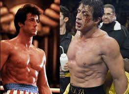

Rocky

- Rocky is about a man. It is the story of a man who exceeds past all normal expectations and makes the most out of what he is doing. What is he doing? Boxing.Why? As Rocky says in the film!!You have to be a moron to want to box??
- Rocky is played by Sylvester Stallone, whose only other film before "Rocky" was "Weekend at Kitty and Stud's," and, as you can probably guess by the title, it was an X-rated movie. But Stallone gives just about the best performance of his career here. Before he started getting into recycled action movies and unfunny comedies, the man had talent, as seen shining through in "Rocky. " Somewhere along the way he lost that talent, but it's pretty evident that he had it at one time.
- Stallone wrote the script, which is about a down-on-his-luck Philadelphia man named Rocky Balboa. Rocky is your average tough-guy you see walking down the street, but this film takes a closer look INTO the guy walking past you, and not AT the guy walking past you.
- He lives in a beat-up, old apartment, infested with roaches, and he barely makes enough money to support himself. His job? Rocky retrieves money for loan sharks. His real job, however, is to break the loaners' thumbs if they don't pay up. He's a muscle man.
- After he returns from his "job" every day, he takes time to do what he has been doing for the past six years, which is boxing. Then, after that, he takes a trip to the local pet store to see the love of his life, Adrian, who works there. He constantly tries to impress her and talk to her, but she is shy and literally does not talk much throughout the entire film.
- But things change for Rocky after heavyweight champion Apollo Creed (Carl Weathers) decides that he wants to make a big performance on the 4th of July. He wants to appear nice by letting a regular Joe Schmoe fight him in the ring. All for show, of course. As he is looking through a book of local boxers, he points his finger at the letters THE Italian STALLION, a.k.a. Rocky. He says that fighting an Italian is perfect. "An Italian found America," Creed says. If he fights an Italian-American on the 4th of July, it will be symbolic and will also make Creed look good.
- But Rocky doesn't realize this is all for show. When he receives word that Apollo Creed wishes to fight him in the ring, Rocky begins to train long and hard with Burgess Meredith, which results in the famous scene where Rocky runs up an entry of stairs in Philly with the music "Gonna Fly Now" playing in the background. This scene is spoofed by films world-wide, and it's one of the cornerstones in film history. You will see it all the time. It's just one of those film moments that are marked down in history.
- And the end, when Rocky fights Apollo Creed, is amazing. A nobody who actually stands a chance against the heavyweight champion of the world. Creed and Rocky are being battered by each other. Creed goes into the opposite corner as Rocky, and one of Creed's managers says, "This guy thinks this thing is for real -- knock him out!" You feel sorry for Rocky there, because he is giving the fight all he's got, when it was just a publicity stunt from the beginning, but he didn't even realize it.
- Things like that are what make "Rocky" what it has become over the years. It is a great film, and it has many classic moments that you will see spoofed in films all the time. You should probably see it just for that fact.
- But the truth is, if you take away all the underlying intricacies, "Rocky" is just the story of a simple guy who gets a chance to do something amazing, and he gives it all he's got. I think we've all gone through something like that before, and if so, you will be able to identify with "Rocky" all the more.